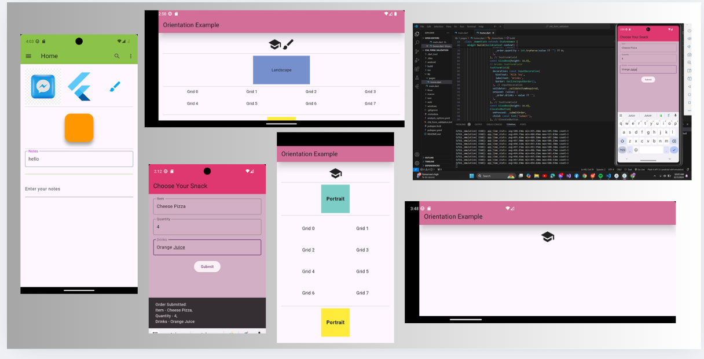

This is just a continuation of chapter 6, this part is all about images and icon. In this part , I learned how to insert an image/icon from your files and url. I also learned to add those decorators as long as the outline input, as you can see in the photo my input has a border, it is not in the book i just browse internet how to do it and I apply it. You an also see that I had put together the images, icon and the input text. I also learned to make a form validation which you can't save the data if your input is null. I also learned the orientation. I did learn a lot in this chapter, above all chapter it is the one which has a lot of practice to do. I did a little improvement from what I learned also in the internet.
